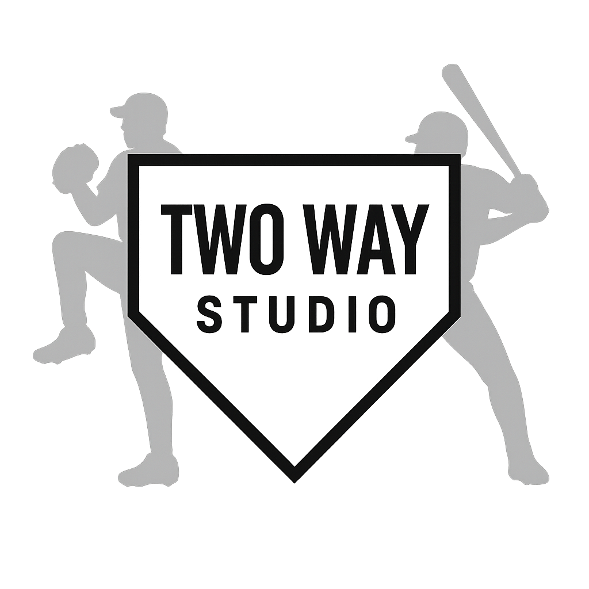
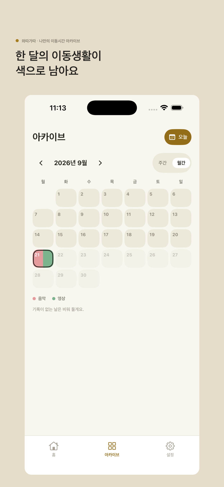

가볍게 기록해요
정확한 분 단위 대신 전체 이동시간과 활동 비율만 남길 수 있어요.

TwoWayStudioWaddaGadda · 와따가따
잘 보낼 필요 없어요. 음악, 영상, 독서, 휴식처럼 이동 중 무엇을 했는지 기억나는 만큼 색으로 남겨보세요.

정확한 분 단위 대신 전체 이동시간과 활동 비율만 남길 수 있어요.
오늘의 기록이 쌓이면 일주일과 한 달의 이동생활이 색으로 보여요.
점수, 순위, 연속 기록 없이 지나온 시간을 그대로 보관해요.
Private by design
와따가따는 정확한 위치나 이동경로, 다른 앱의 사용기록을 수집하지 않습니다. 계정을 연결하면 기록을 클라우드에 보관하고 다시 불러올 수 있으며, 저장된 데이터와 계정은 언제든 직접 삭제할 수 있습니다.